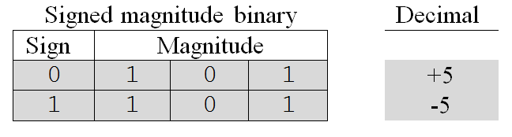
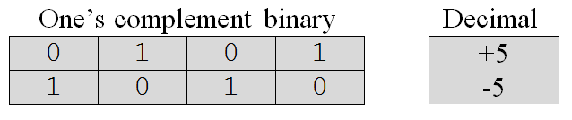
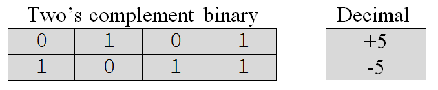
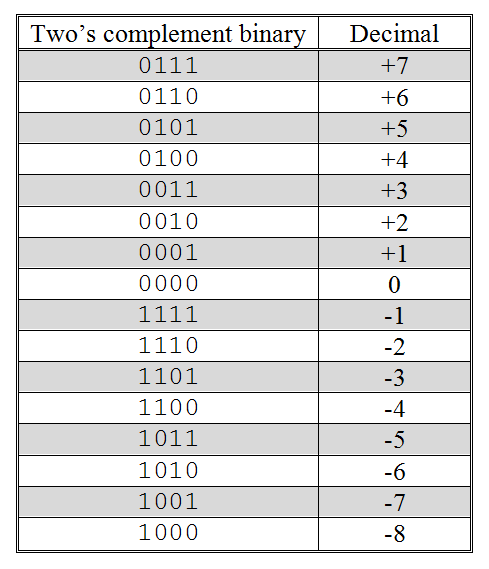
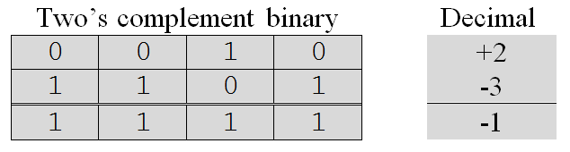
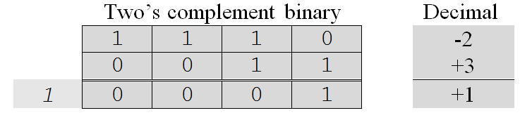
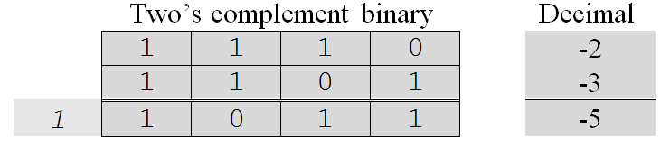
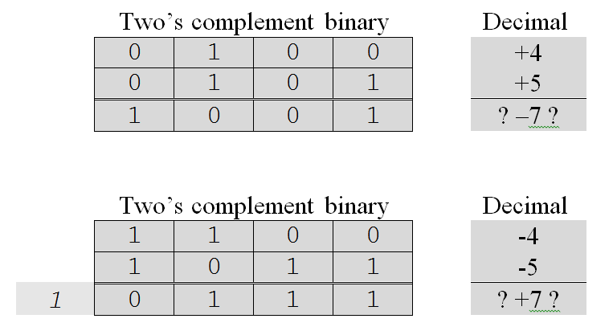

So far all of the numbers we have looked at have been unsigned and assumed to be positive. In order to be able to handle negative numbers, we need a way to represent the sign of a number. We first examine two methods of historical interest and then explore two’s complement, the method in common use today.
An early attempt to handle signed numbers was to add a special sign bit to the left of each number. A zero in the sign bit was used for positive numbers and a one in the sign bit for negative numbers. The representations of positive five and negative five in signed magnitude notation are shown below. These representations assume that three bits are reserved for the magnitude of a number and one bit for its sign.
Signed magnitude notation works, provided that the sign bit is treated separately from the magnitude of the number and guides how arithmetic operations are performed. However, arithmetic in this notation is difficult and results in some anomalies, such as two representations for zero (+0 is 0000 and -0 is 1000).
Arithmetic becomes easier if we write a negative number as the complement of the corresponding positive number. The complement of a binary number is formed by writing a “0” wherever there is a “1” in the original number and a “1” wherever there is a “0” in the original number. As with signed magnitude notation, the leftmost bit still indicates the sign of the number – “0” for positive numbers and “1” for negative. Complementing a binary number in this way to represent signed values is sometimes referred to as one’s complement notation. The one’s complement representation of positive five and negative five are presented below.
Although the arithmetic for one’s complement numbers is much easier than for signed magnitude, the anomaly of two representations for zero (0000 for +0 and 1111 for -0) still exists.
Two’s complement is a variation of one’s complement. To change the sign of a two’s complement binary number, perform the following three steps:
Here are positive five and negative five written in two’s complement notation.
While the idea of two’s complement notation may seem a little strange at first, it has does have a unique representation for zero (0000, given four bits) and straightforward arithmetic operations. Notice that for positive numbers, all three representations (signed magnitude, one’s complement, and two’s complement) have the same pattern as unsigned numbers.
presents the sixteen signed numbers that can be represented using two’s complement notation and four bits of storage. Notice that the numbers range from negative eight to positive seven. In two’s complement notation the range of numbers that can be represented given a fixed number of bits will always include one more negative value than positive value. This is because the representation of zero includes a “0” in the leftmost bit position – thus taking up one of the “positive” slots.
Four-bit, two’s complement signed numbers
For n bits of storage the range of numbers that can be represented in two’s complement notation extends from negative 2 n -1 to positive 2 n - 1 –1. In four bits of storage were used, so the range of numbers was from negative 2 4-1 ( i.e., - 2 3 = -8 ) to positive 2 4-1 - 1 ( i.e., 2 3- 1 = 8 –1 = 7 ). Most modern PCs use a “word” size of thirty-two bits to represent integers. Thus, they are capable of representing values in the range negative 2 31 to positive 2 31-1, or -2,147,483,648 to 2,147,483,647. Older computers used sixteen-bit words and were thus limited to representing integers in the range negative 2 15 to positive 2 15 – 1, or -32,768 to 32,767.
In order to understand why two’s complement is the preferred method for representing signed numbers at the machine level, we will look at a number of addition problems involving both positive and negative numbers. As we will see, what makes two’s complement so great is that the sign of a number can essentially be ignored when performing addition since positive and negative numbers are treated in an identical manner. An added bonus is that we get the subtraction operations for “free” once we have addition, since a problem such as X – Y can be recast as the two step process: (1) swap the sign of Y, then (2) add X and Y.
We begin by examining the summation of numbers with opposite signs. First up is the sum of +2 and –3, which should add to –1. The two’s complement binary representation of +2 is 0010, assuming four bits of storage. The two’s complement representation of –3, also assuming four bits of storage, is 1101. (Remember, start with +3 in base two, 0011, complement the bits to get 1100, then add 1 to get 1101.) Adding these two values together gives 1111, or -1. (The “1” in the leftmost column tells us the number is negative. It’s magnitude can be determined by complementing each bit (giving 0000) and adding one (giving 0001). The addition of +2 and –3 is illustrated below.
Next, we look at the addition of –2 and +3. The four-bit two’s complement binary representation of –2 is 1110. The representation of +3 is 0011. Adding these two values together gives +1 or 0001 in binary two’s complement, as is illustrated below.
Note that this particular addition of two four-bit numbers results in a carry to the fifth bit. This carry is ignored. In order to reinforce the fact that this bit is discarded, it is shown in italics.
We now turn our attention to addition problems involving numbers of like sign. Here is an illustration of the addition of two positive numbers: +2 and +3.
To show that the system handles the addition of negative numbers properly, consider the problem: –2 plus –3 equals –5.
Notice that while we get a correct answer, this problem generated a carry bit that is discarded.
One problem that can arise when representing numeric values via a fixed number of bits is the problem of overflow. Overflow occurs when the value that is to be stored is outside the range of permissible values (in other words the value is too large to fit in the available space). The only way around overflow is to add more bits to the representation, thus increasing the range of permissible values. The best we can do absent this is to detect when overflow occurs.
Two’s complement notation makes it easy to spot when overflow occurs. Overflow occurs when two numbers of the same sign are added together and the result has the opposite sign. Here are two examples.
Overflow in two’s complement can be spotted when the sign bits of both numbers being added are the same, yet the sign bit of the answer is different. Note that overflow can only occur when adding numbers of like sign. It can never occur when numbers of opposite signs are added.
When we detect overflow the answer is incorrect, as shown above by the question marks, and must be discarded. There is no way to get the correct answer if the number of bits available does not allow us to express that answer. There is no way to express +9 or -9, the correct results, using a four-bit two’s complement number, since both are outside the range of permissible values.
Exercises for